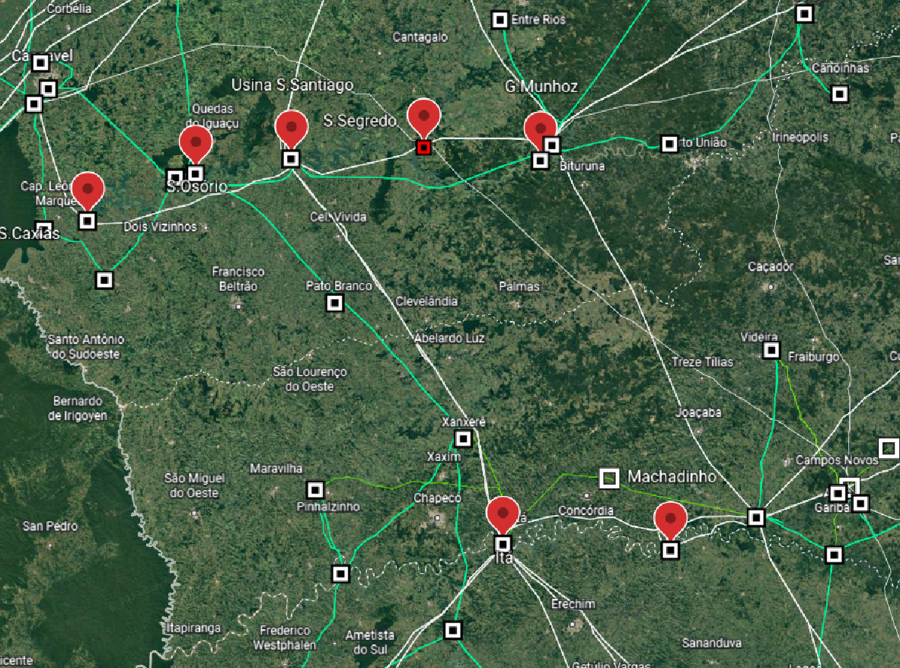

Integrador
Caso Base: Sistema Elétrico de Potência de 33 Barras
A complexidade e o porte de um sistema elétrico de potência pode ser caracterizado pela quantidade de circuitos que integram as malhas do sistema em questão. O sistema elétrico de potência em análise está localizado na região Sul do Brasil, sendo formado por 33 barras, onde 7 delas são unidades geradores e 9 de carga. A topologia do sistema é dividida em duas regiões, A e B, as quais são conectadas por três pontos: um transformador e duas linhas de transmissão.
Cada região apresenta seu montante em relação a geração e demanda, sendo que a região B apresenta a maior capacidade de geração e a menor quantidade de demanda visto pelas cargas no caso base, entretanto a região A expõe de uma maior demanda em relação a sua geração. Por este fato tem-se um intercâmbio de potência entre as regiões, ocorrendo no sentido de B para A. Caracterizando uma folga de geração pela região A.
Devido o sistema elétrico de potência ser um sistema dinâmico, o qual está sujeito a perturbações que podem levar seus elementos a operarem em níveis fora dos limites estabelecidos, é de responsabilidade do operador em tomar decisões operativas as quais devem normalizar e adequar o sistema evitando prejuízos. Dessa maneira alterações no caso base serão realizadas e consequentemente quais práticas operativas influem na regularização do sistema.
As unidades geradoras que compõem o sistema estão presentes geograficamente tanto no estado do Paraná, onde se concentram a maior parcela, tanto na divisa entre Rio Grande do Sul e Santa Catarina, onde dois rios fazem parte da operação das usinas, sendo eles o rio Iguaçu e o rio Uruguai.
Das unidades geradoras:
G.B. Munhoz, definida como barra de referência do sistema por apresentar a maior capacidade de geração, sendo ela de 1674 MW dividida em quatro máquinas de potência máxima de 418,5 MW, sendo que esta usina está localizada no rio Iguaçu e encontra-se sobre responsabilidade da concessionária Copel.
As unidades de Itá e Salto Santiago expõem de uma capacidade de geração máxima próxima, sendo de 1450 MW e 1420 MW, ambas as unidades se diferenciam pela quantidade de máquinas e pelo rio o qual estão localizadas, tendo Itá cinco máquinas e estando presente no rio Uruguai, enquanto S.Santiago apresenta quatro máquinas e localiza-se no rio Iguaçu. Ambas se encontram na responsabilidade da concessionária Eletrosul.
Segredo e Salto Caxias são duas usinas da região B as quais apresentam porte similar, tendo o mesmo número de máquinas geradoras, quatro em cada, e capacidade de geração muito próxima, sendo Segredo de 1260 MW e S.Caxias 1240 MW. Ambas são instaladas no rio Iguaçu e estão sobre responsabilidade da concessionária Copel.
Machadinho encontra-se na região A e apresenta instalada três máquinas, as quais totalizam uma capacidade de geração de 1140 MW. Localiza-se no rio Uruguai e está sobre responsabilidade da concessionaria Eletrosul.
Apresentando a menor capacidade de geração no sistema elétrico em estudo, Salto Osório apresenta uma capacidade de geração de 728 MW. Essa unidade esta situada no rio Iguaçu e sobre responsabilidade da concessionária Eletrosul.
Carregamento Máximo
Inicialmente, tem-se com um carregamento de 5085 MW e 1190 MVar no sistema analisado. A fim de estudar uma possível expansão, utiliza-se o software ANAREDE para obter o carregamento máximo. Para isso, emprega-se a ferramenta Fluxo de Potência Continuado em que ser realiza um incremento linear da carga, sendo 1% na potência ativa e reativa.
Como já esperado, devido ao aumento da carga do sistema, surgiram problemas de subtensão nas barras que foram solucionados aumentando a tensão das unidades geradoras de acordo com a sensibilidade para que o sistema operasse dentro dos limites estabelecidos pelas diretrizes operativas. Além disso, todos os bancos de capacitores foram chaveados de forma que os níveis de tensão nas barras fossem mantidos. Nas barras de BATEIAS (895), CURITIBA (959) e CASCAVEL (840) o problema de subtensão foi recorrente nas simulações.
Por fim, obteve-se um aumento de 42,95% na carga do sistema em comparação ao caso base, obtendo-se um carregamento máximo de 7269,08 MW e 1701,29 MVar conforme exibido na Tabela. Ainda, a tabela mostra os valores percentuais da geração de potência ativa e reativa, além da carga ativas e reativas das áreas A e B também em relação ao caso base.
| Área | Geração (MW) | % | Geração (Mvar) | % | Carga (MW) | % | Carga (Mvar) | % | |
|---|---|---|---|---|---|---|---|---|---|
| Caso Base | A | 1719,6 | - | -420,1 | - | 3110 | - | 559 | - |
| B | 3500 | - | -12,7 | - | 1975 | - | 632 | - | |
| Total | 5219,6 | - | -432,8 | - | 5085 | - | 1190 | - | |
| Carregamento Máximo | A | 3891,2 | 126,28 | 1257,2 | 399,00 | 4446,2 | 42,96 | 799,2 | 42,96 |
| B | 3600 | 2,85 | 790 | 6320,4 | 2822,9 | 42,93 | 902,1 | 42,73 | |
| Total | 7491,2 | 43,52 | 2047,20 | 573,00 | 7269,1 | 42,95 | 1701,3 | 42,95 | |
Ao analisar a tabela, percebe-se que no caso base a região B possui uma geração superior a A. Nesse caso, sabe-se que a transferência de potência ocorre de B para A. Nota-se que em ambas as áreas as unidades geradoras consomem reativos, os quais são injetados pelas linhas de transmissão da região A, e pelos reatores shunt de ambas as áreas. O fornecimento advindo pelas linhas é capaz de atender a demanda das cargas e dessa maneira o excedente é consumido pelas unidades geradoras.
Quando aplicado o carregamento máximo observou-se que a região A apresentou um crescimento expressivo de 126,28% na injeção de potência ativa, o mesmo não foi observado em B visto que seu aumento foi de 2,85%. Diferente do caso base as regiões começaram a injetar reativos para o sistema, visto que agora as linhas de transmissão do sistema consomem reativos e a demanda das cargas aumentou em 42,95%. Ainda é possível notar que ocorre um intercâmbio de potência entre a área B para A
Carga Leve (70% da carga)
Ao decorrer do dia, um sistema elétrico de potência está sujeito a alteração na demanda de carga. Uma redução de 30% no caso base pode ser observada, por exemplo, entre 00h às 07h, aproximadamente, segundo dados da ONS (2019), nesse caso, considera-se que o sistema opera em carga leve.
Realizando uma análise qualitativa sustentada em base teórica, sabe-se que ao reduzir a carga do sistema, a injeção de potência ativa na região A reduzirá consideravelmente, visto que a transferência de potência que já existia entre as áreas B e A permanece o mesmo. Dessa forma, a região A fornecerá uma quantidade mínima de potência.
Já analisando a potência reativa, é possível inferir que a corrente que percorre as linhas de transmissão vai reduzir, logo a impedância indutiva da linha consome uma quantidade inferior de reativos, visto que seu consumo é caracterizado pelo quadrado da corrente. Entretanto o efeito capacitivo da linha permanece fornecendo uma parcela muito próxima de reativos do caso base, assim as linhas começam a injetar reativos no sistema, uma vez que sua geração é maior que sua demanda.
Pelo excesso de reativos no sistema, as unidades geradoras que o compõem passam a consumir potência reativa. A elevação no fluxo de reativos nas linhas provoca níveis de sobretensão nas barras do sistema. Dessa forma, a fim de confirmar a análise previamente realizada, utilizou-se o fluxo de carga do software ANAREDE, obtendo-se os limites de operação do sistema para a condição de carga leve. Medidas operativas foram realizadas para que assim o sistema pudesse retornar à operação.
Tomou-se a decisão de realizar a manobra dos reatores em derivação que estavam a disposição no sistema, sendo acionados às barras: Itá 995, Caxias 964 e Curitiba 959. Assim foram normalizados vários níveis de tensão no sistema, já para os demais níveis de sobretensão utilizou-se o controle de corrente de campo nas unidades geradoras de Machadinho, S.Segredo e G.Munhoz, reduzindo o nível de tensão no terminal impactando na redução da potência reativa.
Carga Pesada (130% da carga)
Durante a final da Copa do Mundo, o sistema elétrico brasileiro apresentou um aumento de 30% na demanda devido ao grande número de televisores ligados simultaneamente, caracterizando um caso de carga pesada. Nesse cenário, espera-se que a corrente que percorre as linhas de transmissão seja maior, o que leva a um aumento considerável no consumo da impedância indutiva. Isso ocorre porque a impedância indutiva é afetada pelo quadrado da corrente. Por outro lado, o efeito capacitivo permanece injetando uma potência similar à do caso base.
Consequentemente, as linhas que injetavam reativos no sistema no caso base agora passam a consumi-los. Como resultado, as unidades geradoras do sistema começam a injetar reativos para atender à nova demanda das cargas e das linhas. É esperado que esse aumento no fluxo de potência reativa entre a barra de geração e a de carga cause queda de tensão no decorrer da linha, resultando em níveis de subtensão apontados no sistema.
Para a análise, utilizou-se o Fluxo de Potência Continuado do ANAREDE com incremento de 2% tanto para potência ativa como reativa. No processo iterativo, foi observado níveis de subtensão recorrentes nas barras Bateias 895, Curitiba 959 e Cascavel 840. Além disso, houve sobrecarregamento do transformador ligado à barra de G.Munhoz, uma vez que essa unidade é a referência do sistema e teve um aumento de demanda expressivo, fazendo com que o fluxo do transformador excedesse a sua capacidade.
O operador do sistema tomou medidas operativas, sendo o acionamento da compensação de banco de capacitores em Gravataí 1210 a fim de normalizar níveis de subtensão. Ainda, utilizou-se o controle de tensão das unidades geradoras para regular a injeção de reativos no sistema. Também, por meio do controle de torque na unidade geradora, aumentou-se a sua produção de ativos em Segredo 10%, Machadinho 100% e Itá 150% de forma a normalizar os limites de operação do sistema.
Aumento de cargas especificas
Aumento de 60% da carga da barra 1210
Na cidade de Gravataí, uma grande multinacional recém-instalada gerou um aumento significativo na demanda local. Esse aumento de 60% impactou diretamente o sistema elétrico, levando as unidades geradoras de Ita e G.Munhoz, que são sensíveis a essa barra, a operarem em sobrecarregamento e ultrapassarem os limites de reativos que podem fornecer. Como resultado, é esperado que ocorram níveis de subtensão no sistema, já que o fluxo de potência reativo pela linha aumentou e causou uma queda de tensão ao longo de sua extensão.
O operador do sistema ao realizar o Fluxo de Potência Continuado do ANAREDE com incremento de 10% de potência ativa e reativa, pode observar para essa condição operativa subtensão recorrente nas barras de Gravataí 976 e Cascavel 840. A fim de normalizar a operação do sistema, inicialmente, acionou-se a compensação de reativos, quatro bancos de capacitores na barra de Gravataí 1210. Além disso, utilizou-se o controle de tensão nas unidades geradoras de Itá e Salto Osório.
Aumento em 250% na barra de Cascavel 2458
No primeiro semestre, em Cascavel, é realizado o Show Rural, um evento de grande porte. Por isso, ocorre um aumento expressivo na demanda de potência local. É possível inferir que com o aumento da demanda, haverá um fluxo de potência maior, o que poderá causar sobrecarregamento no transformador que liga as barras 896 e 2458, assim como nas linhas que ligam a barra 839, caminhos que fazem a conexão entre as unidades geradoras e a carga.
Pelo grande fluxo nas linhas, espera-se que níveis de subtensão apareçam no sistema. Aplicando o fluxo de potência do ANAREDE para a condição operativa em questão, foi possível observar a sobrecarregamento nas linhas que ligam as barras de Cascavel 839 e Sosoria 1047. Ainda, ocorre sobrecarregamento no trafo de G.Munhoz, devido ao aumento no fluxo de potência ativa para atender a carga. Níveis de subtensão foram observados nas barras de Cascavel 2458, Cascavel 839 e Cascavel 896.
A partir de análise prévia, sabe-se que G.Munhoz é sensível a unidade de Itá e Machadinho, assim a condição operativa para normalizar a operação do transformador ligado a G.Munhoz foi aumentar a produção de ativos em 150% de ambas as unidades. Também pelo relatório de sensibilidade, sabe-se que a unidade geradora de Salto Caxias apresenta influência no fluxo e na tensão nas barras 2458 e 896, logo, sua geração de ativos é reduzida em 30% e sua tensão elevada a fim de elevar a injeção de reativos. Ainda, eleva-se a tensão na barra de S.Osório.
Por fim, após as análises realizadas, percebe-se que é preciso limitar a demanda da barra 2458. Os limites de operação sem sobrecarregar as linhas e transformador é um aumento máximo de 75% de ativos e 110% de reativos. Logo, o sistema não consegue atender a essa demanda.
Saída de operção de linhas
Saída de operação da linha entre 856 e 933
É conhecido que o sistema em análise apresenta um intercâmbio de potência da região B para A. As barras 856 e 933 são interligadas por uma linha de transmissão de 500 KV, que precisou ser desativada devido a fortes rajadas de vento que danificaram a linha. Ressalta-se que essa linha é significativa por fazer a conexão entre as áreas.
A desativação dessa linha pode levar a um sobrecarregamento na linha que liga as barras 1060 e 995, uma vez que o aumento do fluxo pode ultrapassar a capacidade da linha. Além disso, é esperado que as linhas de 230 kV da região B sofram níveis de sobrecarregamento, já que a potência precisa percorrer um caminho maior.
Uma vez que o sistema opera com uma linha desligada, há um aumento do fluxo nas linhas o que aumenta a corrente e, consequentemente, o consumo maior de reativos pela impedância indutiva. Dessa forma, as unidades geradoras precisam fornecer mais reativos ao sistema.
Ao simular o fluxo de potência para a condição operativa em estudo, observou-se sobrecarregamento na linha 1060 e 995, que também realiza a ligação das áreas. Além disso, foi registrada sobrecarregamento na linha de 230 kV entre as barras 1047 e 934 e no transformador que liga as barras 2458 e 896, devido ao grande fluxo de potência. Outra consequência do aumento do fluxo de reativos foi níveis de subtensão nas barras 976 e 964.
Para solucionar esses problemas e voltar a operar dentro dos limites estabelecidos, foi necessário realizar uma análise de sensibilidade de fluxo de potência entre as barras 1060 e 995. Essa análise apontou que a unidade de Salto Caxias tinha grande influência nessas barras e, como o fluxo nessas linhas excedia sua capacidade, foi reduzida sua geração em 20%. A fim de solucionar o problema de subtensão, utilizou-se unidades de banco de capacitores disponíveis na barra de Gravataí 1210.
Saída de operação da linha entre 1060 e 995.
A linha retirada de operação é conexão entre as regiões A e B. Nesse caso, sabe-se que haverá um sobrecarregamento da outra linha que interconecta as áreas, ultrapassando seus limites de operação. Ainda, espera-se devido ao maior fluxo de potência pelas linhas, um aumento da corrente de forma que o consumo das linhas também se eleve.
Ao utilizar o fluxo de potência do software ANAREDE foi possível observar que ocorreu um sobrecarregamento na linha que liga as barras 856 e 933, a qual é uma das linhas que interconectam as áreas. A partir de uma análise prévia de sensibilidade, verifica-se que a unidade geradora de S.Segredo apresenta influência significativa no fluxo de potência entre essas barras. Como medida operativa para normalizar o sistema, decidiu-se reduzir em 20% a injeção de potência ativa por essa unidade.
Saída de operação da linha entre 933 e 895.
Retirando de operação a linha que faz a ligação entre a barra 933 e 895, é notável que o fluxo de potência nas demais linhas do sistema também aumenta, o que causa aumento nas perdas de ativos e reativos no sistema. Como resultado, espera-se que as unidades geradoras tenham uma maior injeção de reativos. Além disso, espera-se que ocorram níveis de subtensão nas barras do sistema, já que o fluxo de potência reativa está ocupando a linha e causando queda de tensão ao longo de sua extensão.
Utilizando o fluxo de potência para a condição operativa em questão, o software apontou sobrecarregamento nas unidades geradoras S.Osória, S.Caxias, S.Segredo e G.Munhoz, bem como vários níveis de subtensão nas barras do sistema, tanto na região A quanto na B. Tendo a disponibilidade da manobra de compensação de capacitores em derivação na barra de Gravataí 1210, acionaram-se os bancos, normalizando as unidades geradoras e possibilitando que operassem dentro de seus limites de operação, além de corrigir vários níveis de subtensão do sistema. Isso foi possível uma vez que esses reativos não precisariam ser gerados pelas barras de geração.
Ainda assim, níveis de subtensão estavam presentes nas barras de Bateias 895, Curitiba 959 e Blumenau 938. Por meio de análise de sensibilidade de tensão, constatou-se que as unidades de G.Munhoz e S.Segredo são sensíveis para essas barras, sendo assim, elevou-se sua tensão, aumentando a entrega de reativos. Houve também um aumento de 175% na entrega de ativos em Itá e de 100% no gerador de Machadinho. Com essas medidas operativas, foi possível normalizar os níveis de tensão do sistema, permitindo que ele voltasse a operar dentro de seus limites.
Saída de operação de transformadores
Saída do transformador entre 2458 e 896
Analisando o caso base, é possível inferir que o transformador que une essas barras é crucial para o bom funcionamento do sistema na região de Cascavel. Ao fazer a análise de sensibilidade de tensão, observa-se que a unidade de Salto Caxias tem grande influência, mas ao retirar a linha, essa barra perde sua influência.
Com a saída de operação do transformador entre essas barras, espera-se que as barras da região de Cascavel apresentem níveis de subtensão devido ao aumento do fluxo de reativos nas linhas de 230 kV, podendo levar a um possível sobrecarregamento dessas linhas, uma vez que apresentam baixa capacidade de transmissão. Utilizando o fluxo de potência para a condição operativa foram apontados os níveis de subtensão nas barras de carga de Cascavel e F.Chopim. As linhas entre as barras 1039 e 898/1047 apresentaram sobrecarregamento, ultrapassando sua capacidade.
Somando a potência aparente demandada pelas cargas, nota-se que é maior do que a linha pode permitir. Assim, é necessário realizar o corte de carga, reduzindo em Cascavel a demanda de ativos em 50% e os reativos em 40%. Além disso, é preciso diminuir em 50% a demanda da barra de Cascavel 840, tanto em ativos quanto reativos.
Saída do transformador entre 2458 e 896 e do transformador entre 934 e 933
Um caso peculiar ocorreu com a saída de operação de dois transformadores. Como resultado, a ligação entre as barras Cascavel 2458 e Cascavel 896 foi desativada, assim como a barra Areia 934 e Areia 933. Como resultado, a região que compõe as malhas de 230 kV ficou ilhada, tornando necessária a utilização da unidade geradora de S.Osória como referência para a nova área.
Ao realizar uma análise quantitativa sustentada em base teórica, foi observado que a demanda das barras de carga é 20% maior do que a máxima gerada pela unidade de referência. Além disso, é necessário atender o consumo das linhas de transmissão. Portanto, é inviável que esse fato ocorra.
Uma possível medida operativa que pode ser tomada nessa situação é realizar o corte de carga. Isso permitiria manter a demanda em um nível que a unidade consiga atender as barras de carga, bem como o consumo do efeito resistivo e indutivo das linhas de transmissão. Vale ressaltar que as linhas de 230 kV apresentam uma alta resistência e impedância em sua construção.
Perda da Usina de G.Munhoz
Como resultado é preciso definir uma nova barra de referência do sistema, a qual será responsável por suprir o consumo das perdas do sistema. Deve-se considerar que diferentes resultados serão obtidos, dependendo da escolha da unidade, uma vez que sua capacidade de geração influi para o sistema.
Referência Ita
Tendo a segunda maior capacidade de geração, a unidade de Itá ao ser definida como referência é capaz de suprir a demanda das cargas e o consumo das linhas de transmissão. Sua geração de ativos aumenta em 229,5%.
Referência Salto Santiago
A terceira unidade com maior capacidade é a unidade de S.Santiago, quando tomada como referência do sistema, a mesma não é capaz de suprir a demanda consumida pelas linhas, extrapolando em 23% a geração de ativos. Dessa forma, o transformador ligado a barra apresentou um sobrecarregamento devido ter ultrapassado a capacidade no fluxo de potência. A fim de solucionar o sobrecarregamento, elevou-se a geração de ativos em Itá em 100%, normalizando a operação de S.Santiago e seu transformador.
Referência Salto Segredo
Tornando a barra de geração de S.Segredo como referência, quarta unidade com maior geração do sistema, temos um aumento na geração de ativos da região B, assim o fluxo de potência entre a região B para A se intensificou ainda mais. Ocorre um sobrecarregamento do transformador em aproximadamente 54%, além da linha que liga as barras 856 a 933 opera fora dos limites pré-estabelecidos. Ainda, ocorre subtensão em Cascavel 840. A fim de solucionar os problemas do sistema, eleva-se a geração de Itá em 100% e Machadinho em 100%. Para o problema de subtensão, a tensão na barra geradora de SOSÓRIA é elevada, injetando mais reativos no sistema e elevando a tensão.
Referência Salto Caxias
Já ao utilizar S.Caxias como referência, sabe-se que tem geração similar a unidade de S.Segredo, extrapolou sua produção de ativos em 60%, tendo um grande fluxo de potência saindo da unidade geradora o que acarreta em um sobrecarregamento do seu transformador. Assim como S.Segredo, elevou-se a produção de ativos da unidade de Ita em 150%. Normalizando os elementos do sistema para os seus limites de operação, e conseguindo atender as demandas do sistema.
Referência Machadinho
Presente na região A e com a segunda menor capacidade do sistema, Machadinho quando definida como referência excede sua produção de ativos em 16%, levando o seu transformador a um sobrecarregamento. Dessa forma elevou-se a geração de Itá em 50%.
Referência Salto Osório
Apresentando a menor geração do sistema S.Osório quando definida como barra de referência do sistema não é capaz de atender o consumo demandado pelas linhas de transmissão do sistema, extrapolando a sua produção de ativos em aproximadamente 140%. Em decorrência do grande fluxo de potência na região de 230 kV, onde as linhas apresentam uma capacidade relativamente baixa, vários níveis de sobrecarregamento foram apontados, assim como níveis de subtensão, nas barras de carga da área B e A.
Dessa forma aumentou-se a produção de ativos na unidade de Itá e Machadinho em 150%. Dessa forma as duas unidades conseguem atender a demanda existente pelas suas cargas e linhas de transmissão. Possibilitando que a unidade de referência e os elementos que estavam fora dos limites de operação, retornassem para suas condições operativas.
Melhorias no Sistema
Algumas modificações podem ser realizadas no sistema elétrico em estudo buscando a sua melhoria. Essas alterações puderam ser observadas devido a análise de diferentes condições operativas. As alterações no sistema são citadas abaixo:
Adição de um transformador em paralelo ligando a barra 896 e 2458, possibilitando um maior fluxo de potência vindo das unidades geradoras quando ocorre um aumento na demanda da carga de Cascavel 2458.
Substituição das linhas de 230 kV, por linhas com maior capacidade de transmissão, evitando que assim seja realizado cortes de carga. De imediato pode ser adicionado compensação em série.
Adição de banco de capacitores no sistema, visto problemas de subtensão recorrentes em alguns pontos do sistema.